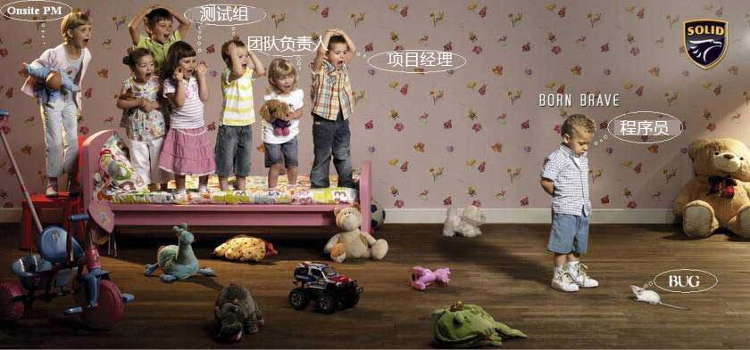

現実版：
1.開発者がプログラムを開発し、内部に欠陥がないと確信している。
2.製品テスト。20個の欠陥が発見された。
3.開発者はそのうちの10個を修正し、テスト部門に残りの10個は本当の欠陥ではないと説明した。
4.テスト担当者は、修正された欠陥のうち5個にまだ問題があることを発見し、さらに15個の新しい欠陥を発見した。
5.ステップ3とステップ4を3回繰り返した。
6.市場の圧力と、過度に楽観的な開発計画によって生じた性急な製品発表により、製品は正式にリリースされた。
7.ユーザーは137個の新しい欠陥を発見した。
8.最初の開発者たちは、忠誠の報酬を受け取ると、跡形もなく去っていった。
9.新たに召集された開発チームは137個の欠陥の大部分を修正したが、さらに456個の新しい欠陥を引き起こした。
10.最初の開発者たちはフィジー諸島から、給与未払いのテスト部門にポストカードを送ってきた。テスト部門は全員辞職した。
11.会社は、最近リリースされた783個の欠陥を抱える製品の利益を使って自社株を買い入れ、競合他社の敵対的買収に対抗した。
12.取締役会は新しいCEOを連れてきた。彼は新しい開発者を雇ってこの製品を作り直した。
13.開発者がプログラムを開発し、内部に欠陥がないと確信している…
教科書版：
ソフトウェアライフサイクルの6つの段階
1. 問題の定義と計画
この段階は、ソフトウェア開発側と要件側が共同で議論し、主にソフトウェアの開発目標とその実現可能性を確定する。
2. 要件分析
ソフトウェア開発の実現可能性が確認された場合、ソフトウェアが実装する必要のある各機能について詳細に分析する。要件分析段階は非常に重要な段階であり、この段階がうまくいけば、ソフトウェア開発プロジェクト全体の成功に良い基盤を築くことができる。「唯一不変なのは変化そのものである。」同様に、要件もソフトウェア開発プロセス全体を通じて絶えず変化し深まっていく。そのため、このような変化に対応するために要件変更計画を策定し、プロジェクト全体の円滑な進行を保護しなければならない。
3. ソフトウェア設計
この段階では、主に要件分析の結果に基づいて、システムフレームワーク設計、データベース設計など、ソフトウェアシステム全体を設計する。ソフトウェア設計は一般に、全体設計と詳細設計に分けられる。優れたソフトウェア設計は、ソフトウェアプログラムの作成に良い基盤を築く。
4. ソフトウェア実装（プログラムコーディング）
この段階は、ソフトウェア設計の結果をコンピュータで実行可能なプログラムコードに変換するものである。プログラムコーディングでは、統一され、標準に適合したコーディング規約を策定しなければならない。これにより、プログラムの可読性、保守性を保証し、プログラムの実行効率を向上させる。
5. ソフトウェアテスト
ソフトウェア設計が完了した後、厳密なテストを経て、ソフトウェアの設計プロセス全体における問題を発見し、修正する。テストプロセス全体は、単体テスト、結合テスト、システムテストの3つの段階に分かれている。テスト方法は主にホワイトボックステストとブラックボックステストの2つがある。テストプロセスでは、詳細なテスト計画を立て、テスト計画に厳密に従ってテストを実施し、テストの恣意性を減らす必要がある。
6. 運用保守
ソフトウェア保守は、ソフトウェアライフサイクルの中で最も長く続く段階である。ソフトウェアの開発が完了し、使用が開始された後、さまざまな理由により、ソフトウェアはユーザーの要求に適合し続けることができなくなる。ソフトウェアの使用寿命を延ばすには、ソフトウェアを保守する必要がある。ソフトウェアの保守には、是正保守と改善保守の2つの側面が含まれる。